InnerSource Adoption at the Organizations
The Basics
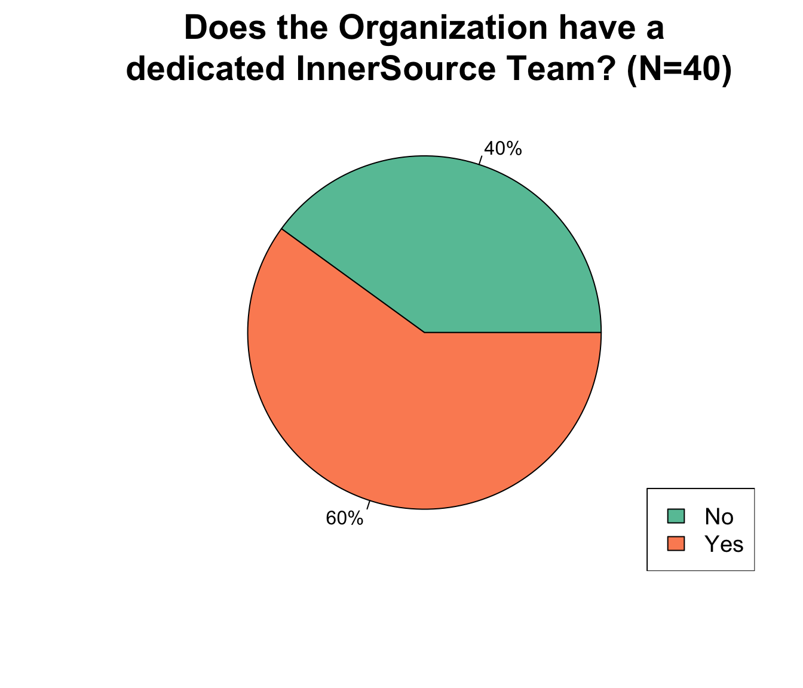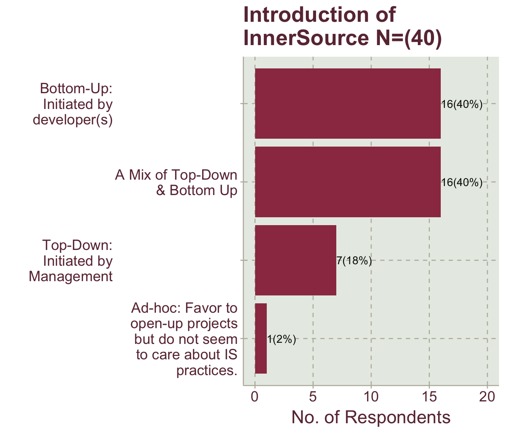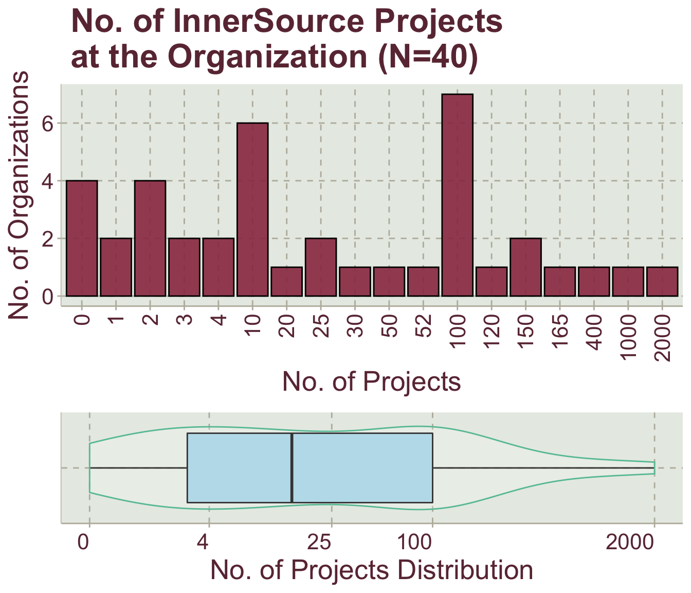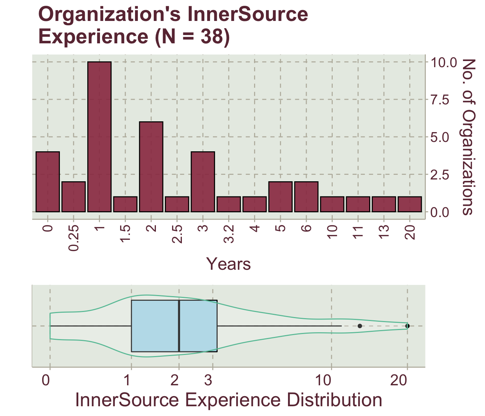
Adopting InnerSource and its Effects
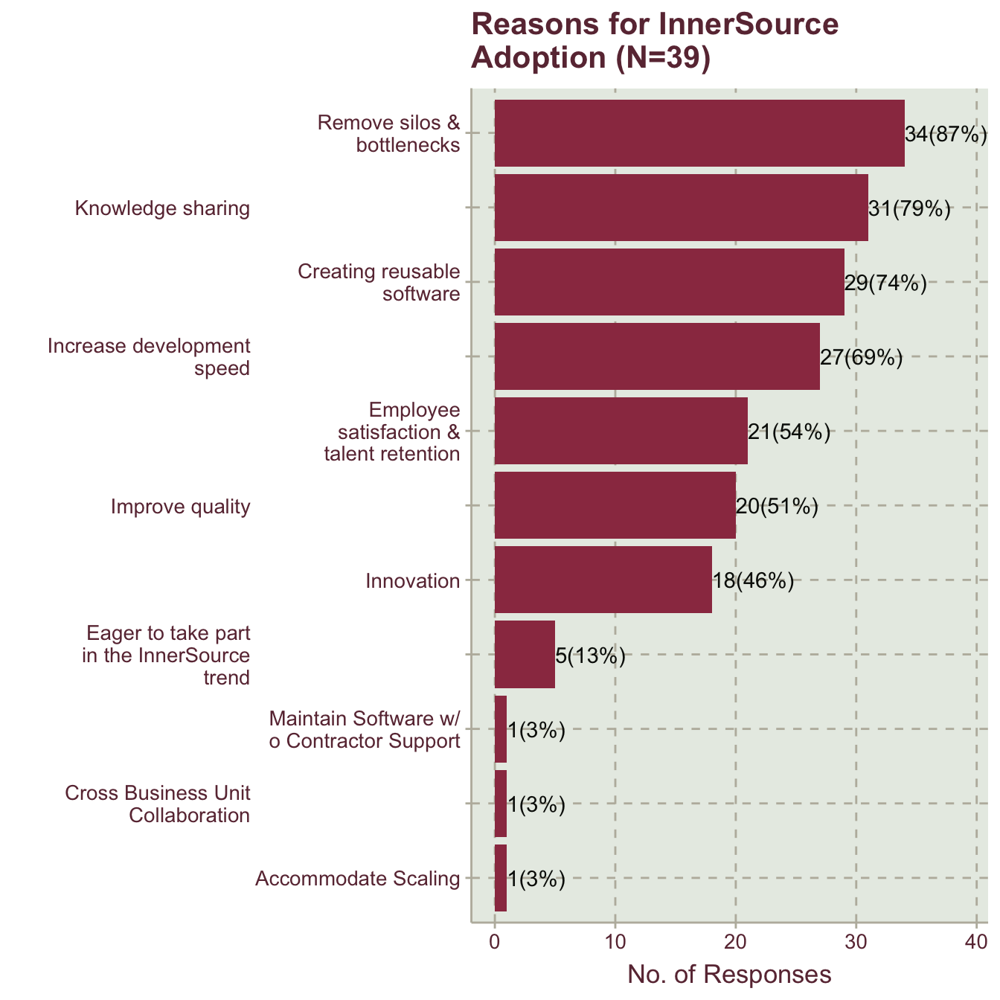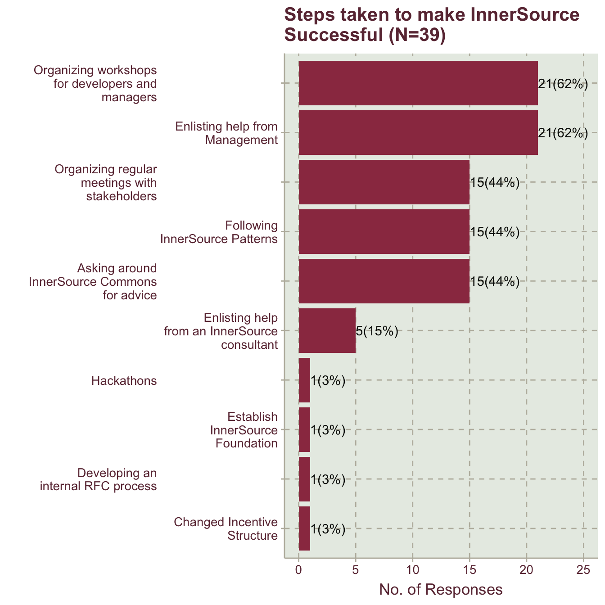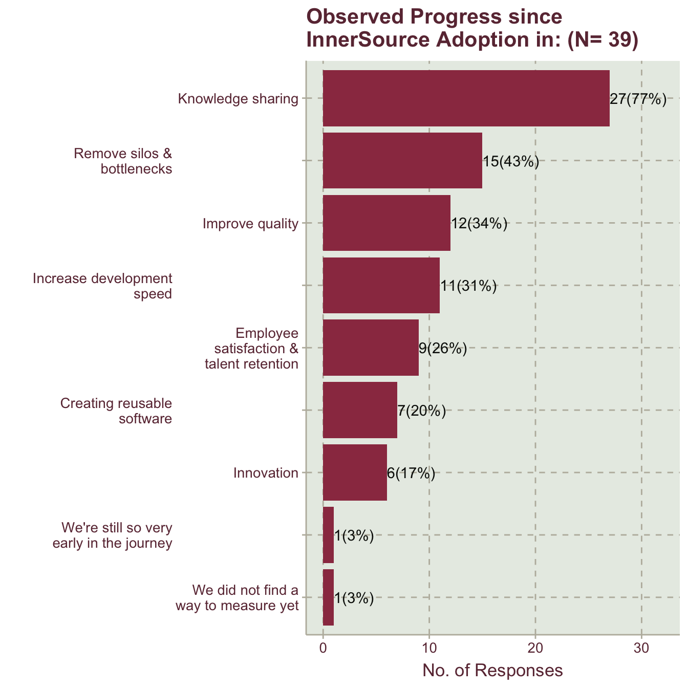
InnerSource Project Contributions
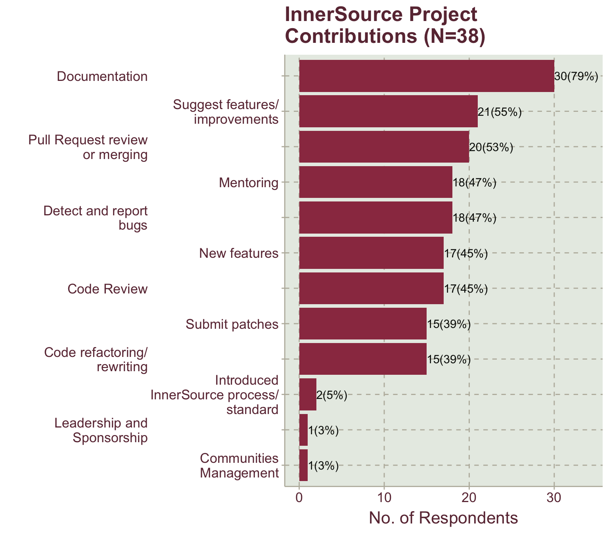
Effect of InnerSource Adoption on self

InnerSource Practices at the Organization
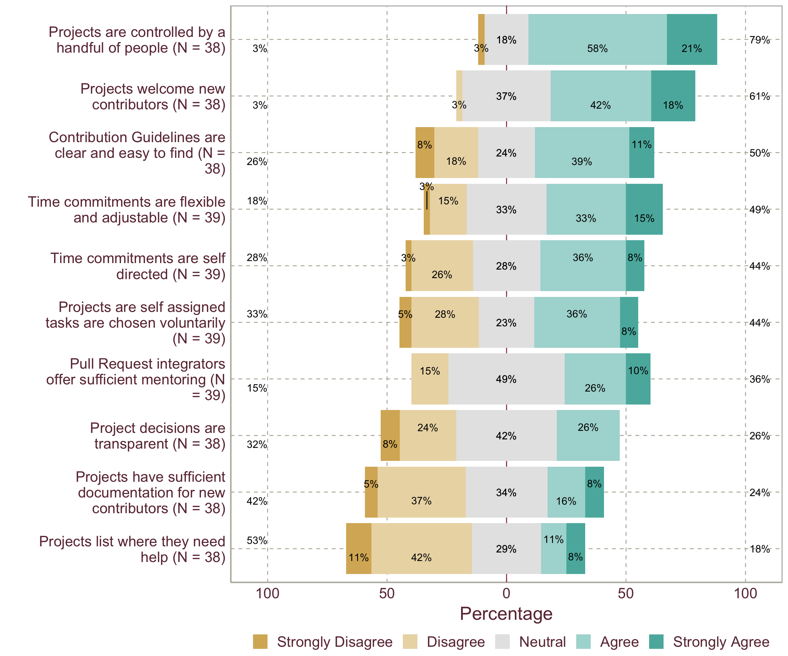
Perceived Progress and Success in InnerSource Adoption
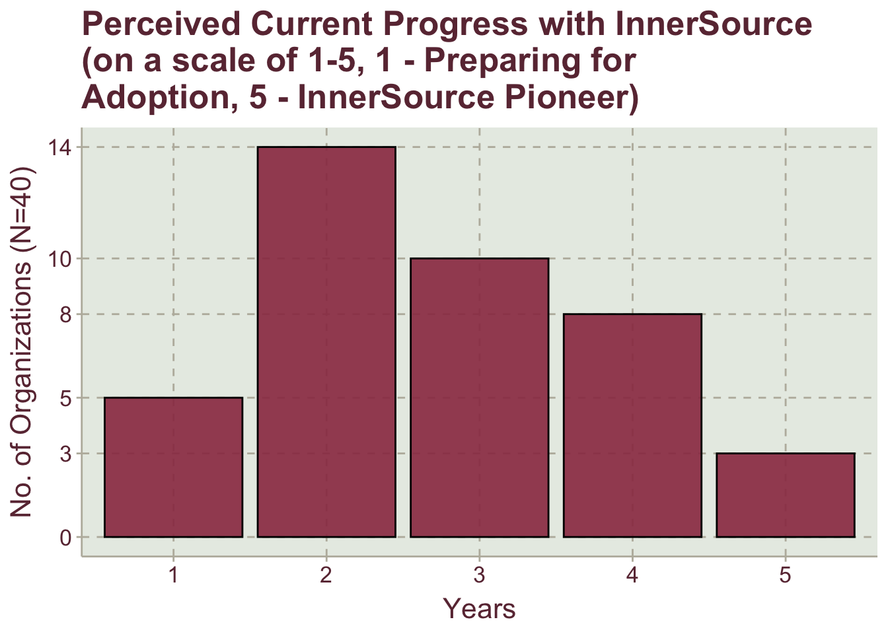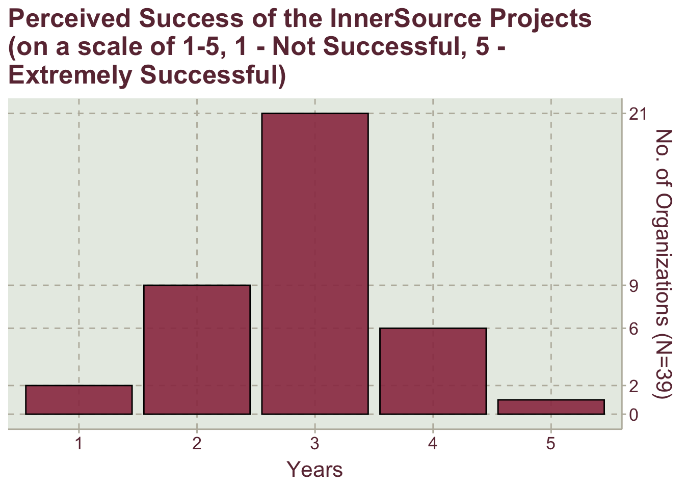
Measuring InnerSource Adoption Progress/Success
Common Themes: No. of InnerSource Ready projects, Cross-team Contributions, No. of Contributors, Employee Feedback/Survey
Full Responses:
- [Not totally happy with this] The metric that has been set by Senior Management is the Fraction of total software projects that are “InnerSource ready” (as defined by criteria jointly created across software org), e.g. by end of Q1’21 have 25% of software projects meeting minimum criteria and on our InnerSource portal.
- Cross-team Contributions
- We have an InnerSource dashboard where we add repos that are participating for discoverability. We watch the growth from there. We also watch the number of new contributors joining teams and helping with InnerSource contributions.
- Employee Feedback
- Numbers of followers in mattermost canals
- InnerSource collection list of GitHub repos is done. There are a lot. But the contribution model, incentivation, long-term-support, etc. are very unclear for most if not all. Usually its a loneley fighter or local tool that would hope for more usage. Often it would deserve more visibility. But we lack getting that innovations to adoption and contribution. However there are some examples where progress can be seen.
- user satisfication
- Our rapid development and deployment practice got measurably faster
- The number of ready for InnerSource projects/products
- shared projects / adoption of common tooling / cross project collaborations
- beginning to implement grimoirelab
- Number of PRs
- We have measured through the amount of HTTP clones through repositories
- Surveys, project marketplace
- Usage and contribution statistics, with extrapolated savings
- Interviews
- We haven’t developed meaningful metrics or KPIs yet as it’s a volunteer-led effort
- Surveys
- Just by observing if more than one team is using it. Would love to be able to see if anyone has cloned my repos.
- Contributions from outside core project teams, usage of internal InnerSource products.
Statistically Significant Relationships:
- Having an InnerSource team with How long ago InnerSource was introduced — Positive correlation, p-Value: 0.017
- No. of InnerSource Projects with how long ago InnerSource was introduced — Positive correlation, p-Value: 4.4e-07
- Perceived InnserSource Progress with having an InnerSource team — Positive correlation, p-Value: 0.001
- Perceived InnserSource Success with having an InnerSource team — Positive correlation, p-Value: 0.014
- Perceived InnserSource Progress with how long ago InnerSource was introduced — Positive correlation, p-Value: 0.0005
- Perceived InnserSource Success with how long ago InnerSource was introduced — Positive correlation, p-Value: 0.005
- Perceived InnserSource Success with Perceived InnserSource Progress — Positive correlation, p-Value: 1e-5
No. of InnerSource projects had no significant relationship with the perceived InnerSource progress or success !